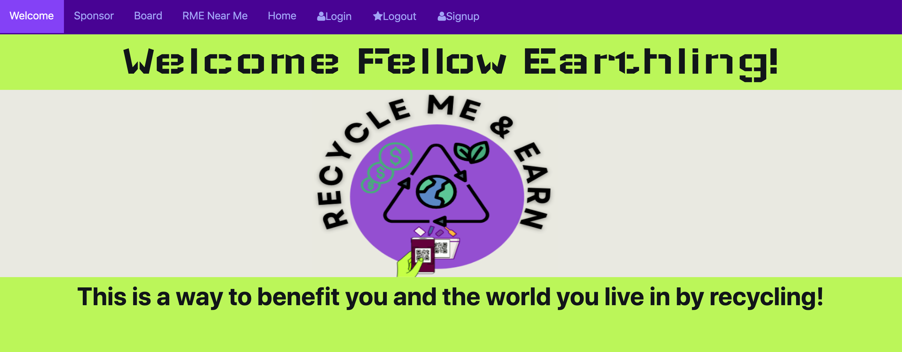
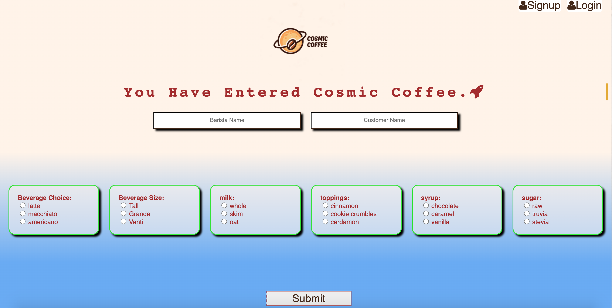
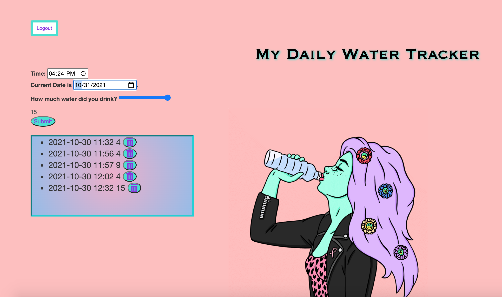
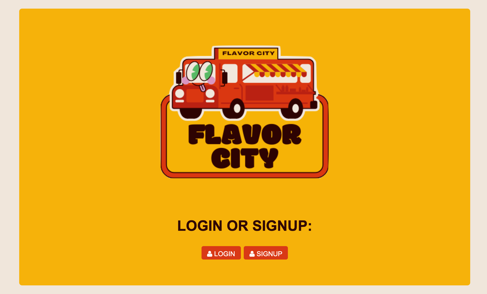
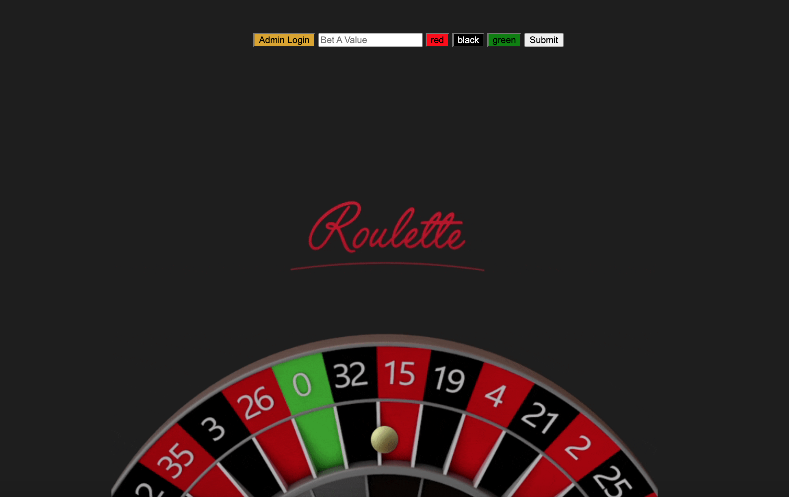
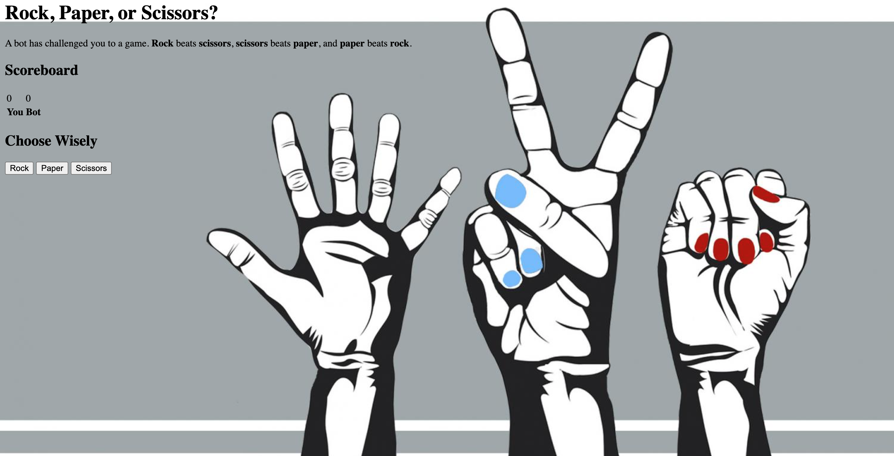

Recycle Me & Earn

This application is my idea to create a mobile app where a user can redeem rewards for recycling. The user would need to go to the designated recycle area; this can be seen on the map. Click RME near me Tab to view the map. For domonstration purposes I have put the QR codes on the map. Ideally a person would have to physically be at the RME station, log into their account and scan the QR code on the bin. Then they would scan the item they are recyling and toss it in the bin. Once both scanners have been processed they earn points! The points will have a value in order for users to benefit from this! An additional feature is a table located on the Dashboard Tab. The table displays the items that have been recycled and how many times that particular item was recycled.
Cosmic Coffee

This application is a mock up POS system. It allows the user to be able to place an order and send that order to the baristas account. Each Barista's name will be shown as well as the customers. Once the order is complete the user will be able to press the complete button or delete it if the order is canceled. Once the complete button is pressed an added feature of a voice will read the completed order for the customer outloud.
The Water Tracker

This is an essential water tracker application! The user will be able to keep track of their water intake goals. The user will choose the time, date and number of cups of water they drank.
Flavor City

This is a fun Social Media Application called Flavor City, where users can share posts an image and description about their meals and browse at other users dishes.
Roulette Game

This application is to demonstrate the casino's administrator perspective. The administrator will be able to see how much money the casiono is collecting when the player loses to the casino. The administrator uses this application to keep track of their revenue.
A To Do List

This list has been created to keep track of any tasks. Once the user inputs a task they will be able check it off. Not only will the user be able to check it off; they have the option to clear all completed tasks simutaneously or individually.
Matching Card Game Avengers Edition

This is a memory game. The user will be able to click on a card and it will display for a few secconds. The user will then choose another card; if it is a match both cards will stay displayed. If it is not a match both cards will flip back to how they were originally. Once every card is matched the user wins!
Rock Paper Scissors Game

This is a classic game that will be played against the computer. The user will choose either Rock, Paper or Scissors and the Computer will choose one of the three options as well. If the user wins it will display Winner and if the Computer wins it will display try again.
Rick And Morty Complex API Generator

This here is what I think is a fun way for using APIs. This application uses two APIs. I chose the cartoon Rick And Morty and giphys! The user will press the button that will generate a characters name and the image of the character will display!